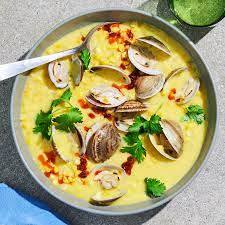

Clam Chowder

Description
A delicious, traditional, cream based chowder, this recipe calls for the standard chowder
Ingredients
- onion
- celery
- potatoes
- diced carrots
- clams
- cream
Steps
- Drain juice from clams into a large skillet over the onions, celery, potatoes, and carrots. Add water to cover, and cook over medium heat until tender.
- Meanwhile, in a large, heavy saucepan, melt the butter over medium heat. Whisk in flour until smooth. Whisk in cream and stir constantly until thick and smooth. Stir in vegetables and clam juice. Heat through, but do not boil.
- Stir in clams just before serving. If they cook too much they get tough. When clams are heated through, stir in vinegar, and season with salt and pepper.